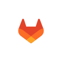
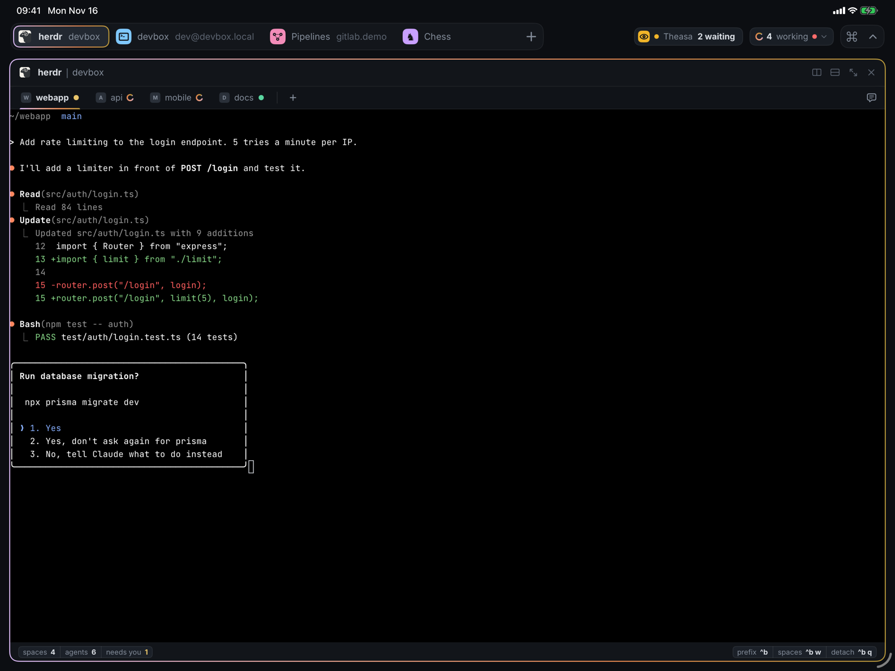
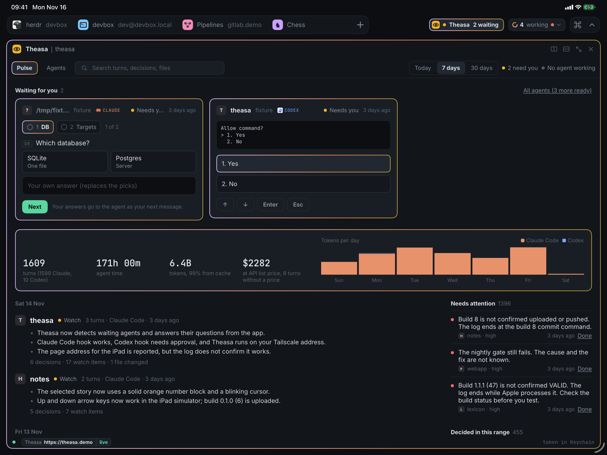
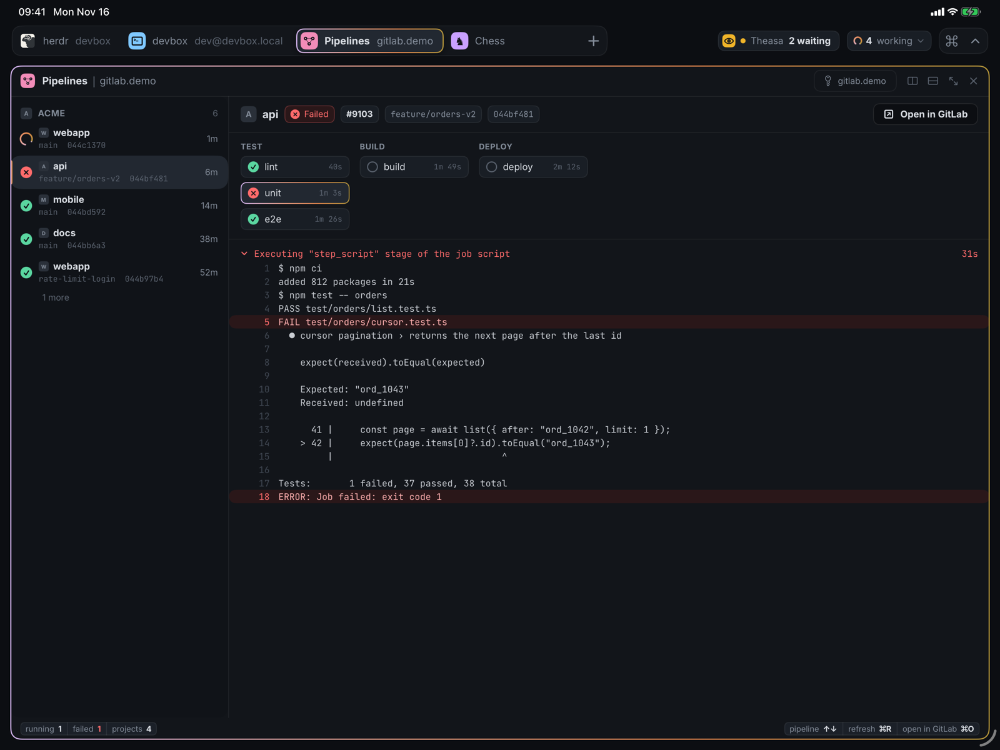
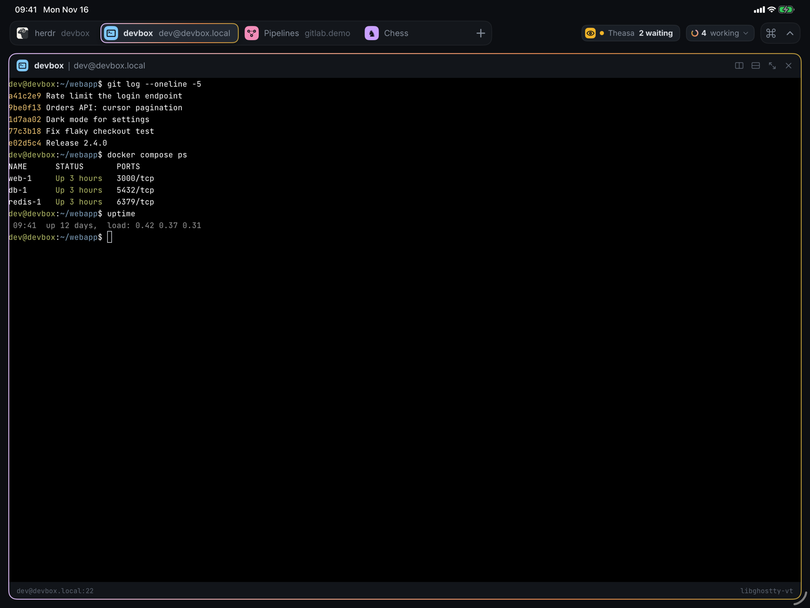
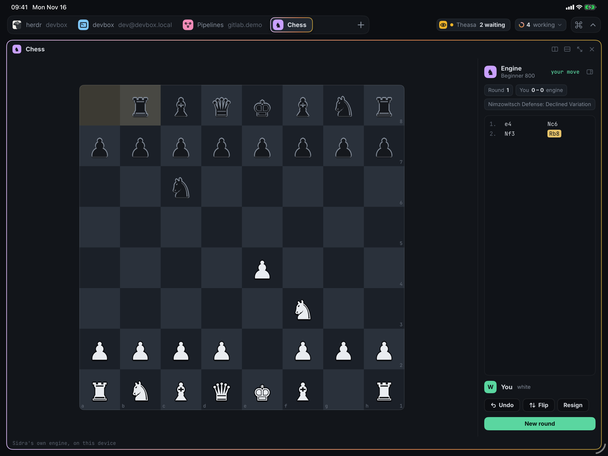
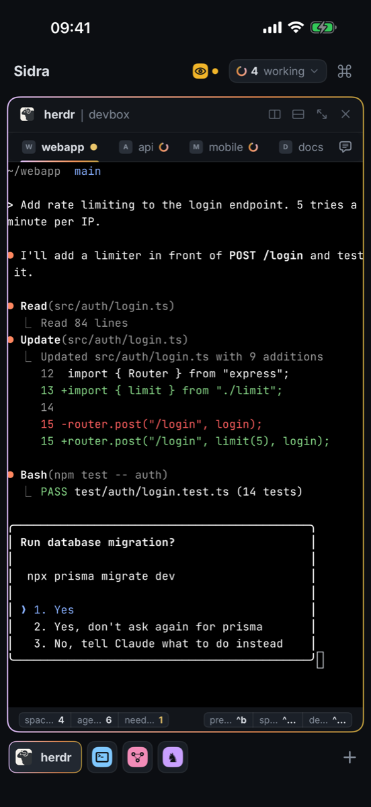
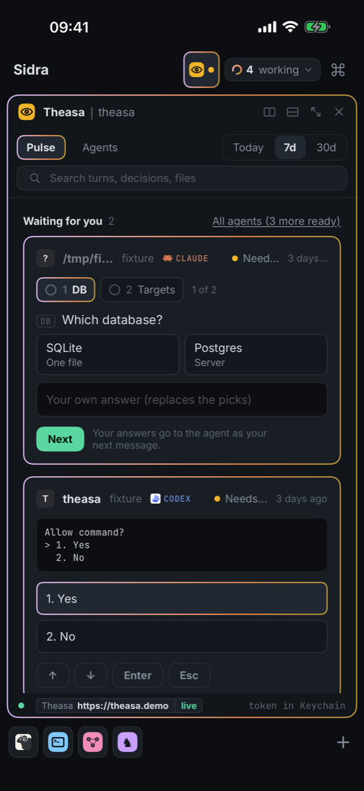
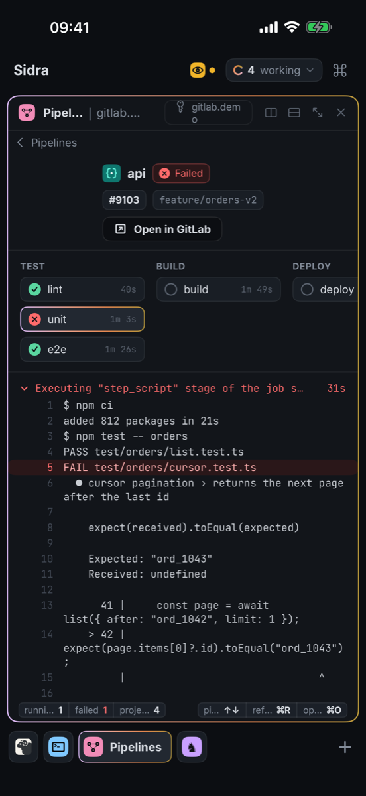

Your coding agents,
on your iPad.
Run Claude Code and Codex in herdr on your Mac or Linux machine. Sidra opens herdr over SSH, and a dot shows you each agent that needs an answer.
Works with
 herdr
herdr
 Claude Code
Claude Code
 Codex
Codex
 Tailscale
Tailscale

Sidra and herdr in one film
Every agent in one tab bar
Sidra runs herdr's own client in a terminal tab. herdr's spaces and tabs show as chips above it, so you switch with one tap.
- A dot on each space shows an agent that works, waits for you or is done.
- The title bar counts the agents that work and the ones that need you, across all your machines.
- Send one prompt to several agents at once.
- Your agents keep running on the machine when your iPad sleeps.
Answer agents from the title bar
Theasa is a small server that records your Claude Code and Codex turns and writes a summary of each. Tap the Theasa pill to see the agents that wait for you and answer their questions.
Theasa is open source too. Run it on your machine.

Logs of your recent failed jobs
See the GitLab pipelines of all your projects, newest first. Open a failed job to read its log, with the failed lines marked.
Your GitLab token stays in the Keychain of your device.

A real terminal on every machine
Open a shell on any host you reach over SSH, with mosh for flaky networks. The terminal is libghostty-vt, with keys from the Secure Enclave.
Split a tab to put a shell next to herdr.

Hacker News and chess while you wait
HackerTab shows Hacker News with the comments first. Chess plays against Sidra's own engine, on your device.
Tap + to open any tab. You set up each kind the first time you open it.

The same tabs in your pocket



Set up in five minutes
- Install SidraGet it free from the App Store on an iPad or iPhone with iOS 26.
- Add your machineTap +, choose SSH host, and add the public key Sidra shows to your machine.
- Open herdrTap +, choose herdr and pick the machine. Tap Install herdr if it is missing.